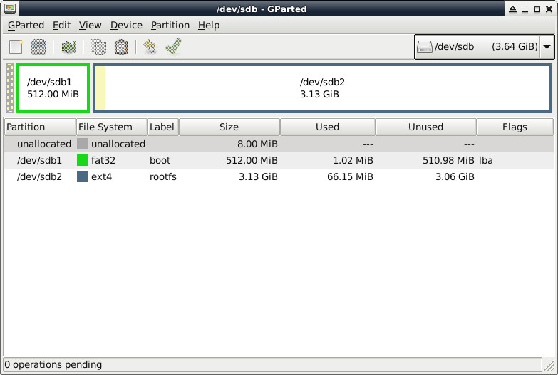

Steward
分享是一種喜悅、更是一種幸福
掌機 - Pyra - 如何製作可開機SD
參考資訊：
https://dev.pyra-handheld.com/daveshah/pyra-uboot/-/tree/pyra-alt-ddr3
https://forum.digikey.com/t/debian-getting-started-with-the-omap5432-uevm/12455
步驟如下：
$ sudo dd if=/dev/zero of=/dev/sdb bs=1M count=10
$ sudo dd if=MLO of=/dev/sdb count=2 seek=1 bs=128k
$ sudo dd if=u-boot.img of=/dev/sdb count=4 seek=1 bs=384k
$ sudo fdisk /dev/sdb
Command (m for help): p
Disk /dev/sdb: 3.7 GiB, 3904897024 bytes, 7626752 sectors
Disk model: Storage Device
Units: sectors of 1 * 512 = 512 bytes
Sector size (logical/physical): 512 bytes / 512 bytes
I/O size (minimum/optimal): 512 bytes / 512 bytes
Disklabel type: dos
Disk identifier: 0x5b9d58b7
Device Boot Start End Sectors Size Id Type
/dev/sdb1 16384 1064959 1048576 512M c W95 FAT32 (LBA)
/dev/sdb2 1064960 7626751 6561792 3.1G 83 Linux
$ sudo mkfs.vfat /dev/sdb1
$ sudo mkfs.ext4 /dev/sdb2
$ sudo fatlabel /dev/sdb1 boot
$ sudo e2label /dev/sdb2 rootfs
/dev/sdb是司徒使用的例子，最前面保留8MB給MLO、u-boot.img使用
